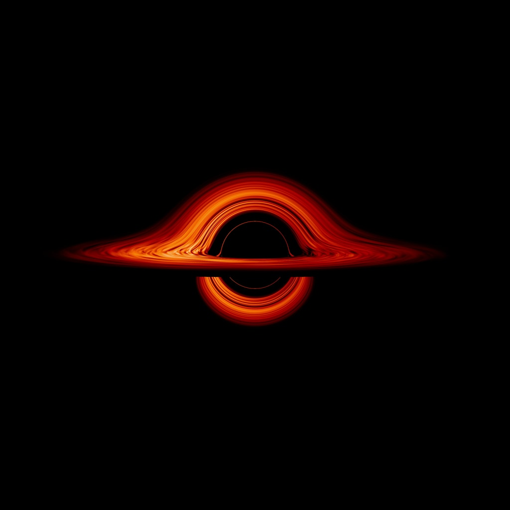

Black hole Primary candidate
Black-hole accretion disk — edge-on view

Public domain (NASA SVS) · Publisher’s reuse terms
Strong match for the disk bending above and below the black-hole shadow.
This is a nonrotating model, so it does not reproduce the spin-related shadow asymmetry in the opening prose.